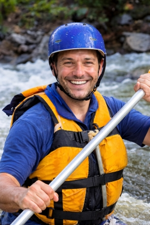

White Water Rafting 
Our purpose is to create unforgettable rafting adventures that connect people with nature. Our mission is to deliver safe, exciting, and expertly guided whitewater experiences while respecting our rivers and environment. Our creed is teamwork, safety, and respect—for our guests, our staff, and the wild places we explore.